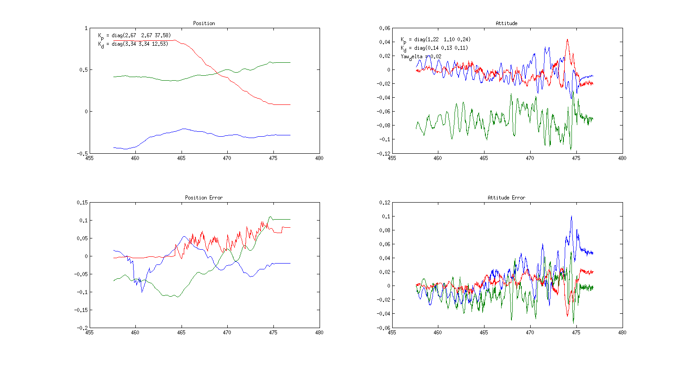
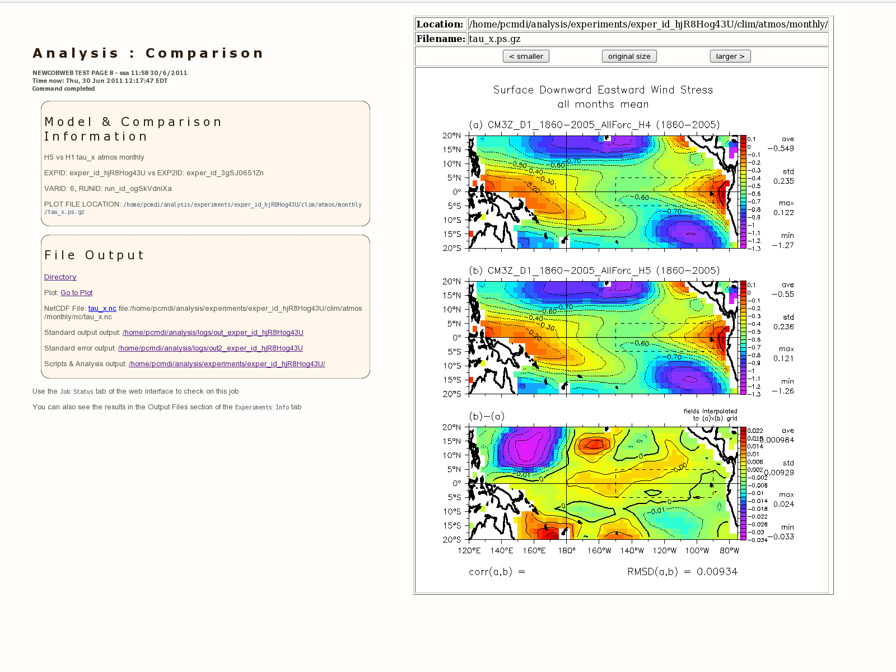

While the dynamics of quadrotor control and trajectory planning are well known, on-the-fly adaptation of flight trajectories in dynamic environments is an ongoing and worthwhile problem.
The goal of our project is to develop optimal trajectories that enable a quadrotor to track a desired reference, while adapting to moving obstacles in a manner which recognizes the dynamic vehicle performance capabilities.
We successfully implemented an A* 2D planner with time as a 3D dimension and ran tests both in ROS simulations as well as live with CMU's quadrotors and VICON system. We also developed MIDI control of desired position and controller gains allowing for quick on the fly tuning of quadrotors, speeding up development time significantly in the lab. 
We worked with Nathan Michael’s research group in the Field Robotics Center to evaluate the performance of our solution on their quadrotor hardware operating in the existing VICON motion capture flight arena.

Developed a sample mobile application called SmashPix that demonstrates the full cloud ecosystem using Google technologies including Android mobile, App Engine, Compute Engine, Cloud Storage, and Cloud Endpoints. This application was successfully imagined and published in 12 weeks.
Live on Google Cloud Platform's Technical Articles.

Created a prototype system that provides an intelligent visual interface to automating configuration and instantiation of a CESM Climate model simulation on Amazon's Elastic Cloud.
It utilizes a formal semantic network (OWL Ontology) to allow a reasoning engine to infer relationships between choices made, reducing the number of choices a climate scientist or researcher needs to make, as well as providing high-level validation of CESM configurations.
Part of a co-authored article published by IEEE Software.
Technical report available at SMARTech.

A Barnes-Hut Simulation is an N-body simulation of gravitational interactions between point particles using the Barnes-Hut algorithm.
This simulator runs a simulation of the gravitational interactions between an arbitrary amount of bodies/points (tested up to 100k particles).

Developed front end Web Form GUI towards configuring a new CESM simulation.
Shows as proof of concept basic inference techniques (as expanded in C3) to reduce possible choice combinations for faster & more intelligent configuration.
» Geophysical Fluid Dynamics Laboratory - NOAA
While interning at GFDL, I helped developed intelligent data portal interfaces for running analyses on climate data.